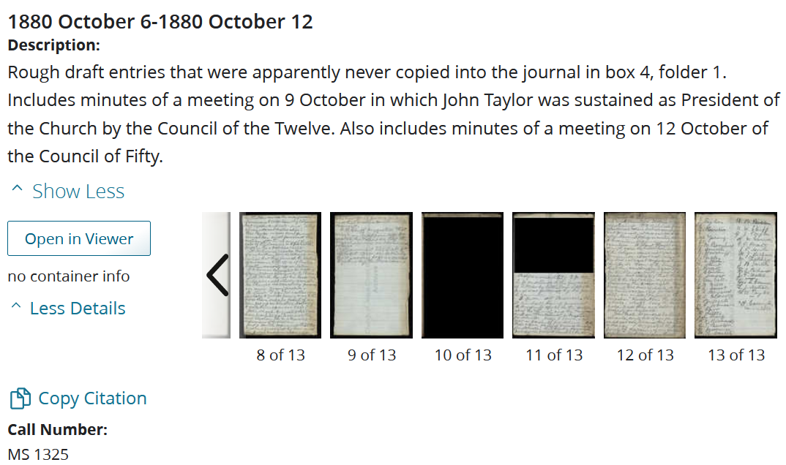
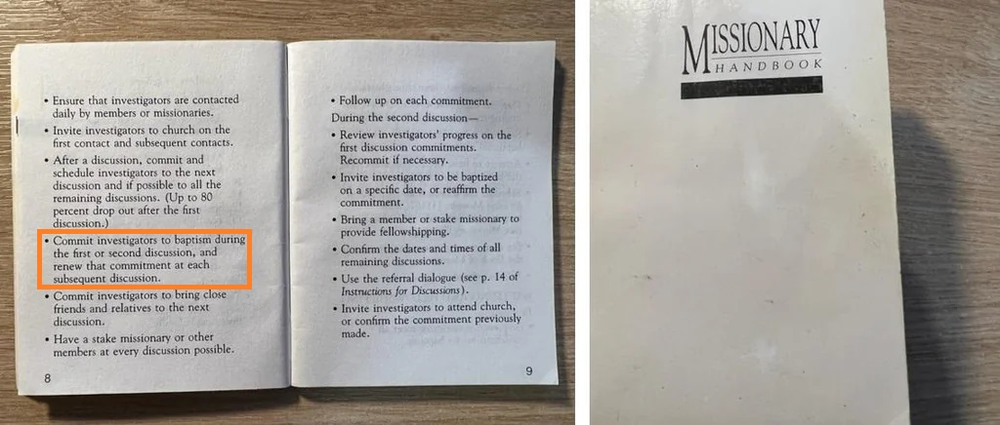

🧼 Whitewashing History¶
Estimated time to read: 10 minutes
There has been no attempt on the part, in any way, of the church leaders trying to hide anything from anybody.
We're as transparent as we know how to be.
— Face to Face with Elder Oaks and Elder Ballard, 46:37 timestamp (Archive link)
Fun fact: if you look closely, this video is unlisted, meaning it "won’t appear in the Videos tab of your channel homepage. They won't show up in YouTube's search results unless someone adds your unlisted video to a public playlist."
You can't make this up.
First Vision concealment¶
As church historian, Joseph F Smith tore out pages and destroyed/hid papers that recorded negative aspects of church history. The first-hand account of Joseph's First Vision was cut from his journal, since it didn't closely match the broadly accepted standard version.
WasMormon.org has this saga well-documented for your reading enjoyment.
This six-page history was at some point excised from the letterbook. Fortuitously, one can actually date the time period when these leaves were removed, because the tearing of the last of the three leaves was done with such little care that a small triangular fragment (containing four words of the text) was initially left in the gutter of the letterbook and then removed and taped back onto the last leaf. The clear cellophane tape that was used for this repair was not invented until 1930... Furthermore, “the cut and tear marks, as well as the inscriptions in the gutters of the three excised leaves, match those of the remaining leaf stubs, confirming their original location” in the Joseph Smith letterbook. By 1965 these three leaves of the 1832 account were again “archived together with the letterbook.” Thus, the period when these three leaves were separated was approximately 1930 to 1965—or allowing a five-year period for the cellophane tape to come into common usage in America, the three decades from 1935 to 1965.
— Another Look at Joseph Smith’s First Vision, Stan Larson, Dialogue Journal
If we've accurately identified (or estimated) when pages were cut out from Joseph Smith's own hand-written journal, we can then compare to who was serving as the Church Historian and Recorder between years 1921 and 1970. To me, this would indicate gross negligence at best, or deliberate disregard for historical documents by the one man appointed to be responsible for preserving historical documents.
The cellophane tape is visible in the Joseph Smith Papers Project scans of these documents: - Letterbook 1 - JS' History, circa Summer 1832 - JS' History, circa Summer 1832, Page 5
Under the "Source Note" for the 1832 document:
Also, the initial three leaves containing the history were excised from the volume. The eight inscribed leaves in the back of the volume may have been cut out at the same time.
In the footnote of that source note:
These eight leaves have not been located.
Manuscript evidence suggests that these excisions took place in the mid-twentieth century. A tear on the third leaf, which evidently occurred during its excision, was probably mended at the time. This tear was mended with clear cellophane tape, which was invented in 1930
I'm trying to keep this one brief, but much more detail can be found in the WasMormon.org page, as well as LDS Discussions.
General Conference¶
Before 1971¶
LDS website only shows general conferences back to 1971. Why?
Go look at the earliest listed entry:
My dear brothers and sisters:
We welcome you, and all those who hear and see on radio and television. We welcome you to the sessions of the 141st Annual General Conference of The Church of Jesus Christ of Latter-day Saints.
— Out of the Darkness, Joseph Fielding Smith, President of the Church, General Conference 1971 April
141st? Where are the other 140?
1981¶
Straight up, they removed an entire paragraph from the searchable text, and I'll prove it.
[Here's a link](https://www.churchofjesuschrist.org/study/ensign/1981/05/turning-the-hearts?lang=eng to the talk, with a video recording. Play it and read along. The quote below begins at 6:39. Note that the transcript omits the bolded paragraph.
. . . They will get a great desire to raise a family of their own when they see what a great blessing they were to you.
If children have a happy family experience, they will not want to be homosexuals, which I am sure is an acquired addiction, just as drugs, alcohol, and pornography are. The promoters of homosexuality say they were born that way, but I do not believe this is true. There are no female spirits trapped in male bodies and vice versa. He who made them made them male and female. Every form of homosexuality is sin, said the living prophet Spencer W. Kimball.
Also, I seriously doubt that you will ever turn your own heart more to your own fathers than by writing your family history. . . .
— Turning the Hearts, Elder Hartman Rector, Jr. First Quorum of the Seventy, General Conference 1981 April
Now why would they want to remove that?
2012¶
A few question their faith when they find a statement made by a Church leader decades ago that seems incongruent with our doctrine. There is an important principle that governs the doctrine of the Church. The doctrine is taught by all 15 members of the First Presidency and Quorum of the Twelve. It is not hidden in an obscure paragraph of one talk. True principles are taught frequently and by many. Our doctrine is not difficult to find.
— Trial of Your Faith, Elder Neil L. Andersen, of the Quorum of the Twelve Apostles; General Conference October 2012
Compare this to 2007...
Much misunderstanding about The Church of Jesus Christ of Latter-day Saints revolves around its doctrine. The news media is increasingly asking what distinguishes the Church from other faiths, and reporters like to contrast one set of beliefs with another.
The Church welcomes inquisitiveness, but the challenge of understanding Mormon doctrine is not merely a matter of accessing the abundant information available. Rather, it is a matter of how this information is approached and examined.
The doctrinal tenets of any religion are best understood within a broad context, and thoughtful analysis is required to understand them. News reporters pressed by daily deadlines often find that problematic.
— Approaching Mormon Doctrine, Mormon News Room, 4 May 2007
Then compare to FAIR.
Official doctrine is usually easy to determine. When FAIR is aware of an official doctrine or position statement, we attempt to provide it, with references so interested readers can check the sources for themselves. In all other cases, we try to describe the spectrum of LDS thought on a given issue, while noting that more than one point of view is held by faithful members of the Church.
— Introduction to apologetics, FAIR,
Council of Fifty meeting minutes¶

— Joseph F. Smith papers, 1854-1918; Autobiographical writings, 1856-1909; Journals and diaries; 1880 October 6-1880 October 12; Church History Library, https://catalog.churchofjesuschrist.org/record/120ef45b-fb68-4ea8-bec4-0497c83f4f4d/339275a3-89b3-4f2e-bb01-03dd52e9cdd1?view=browse (accessed: August 2, 2024)
See it for yourself: - Page 10 - Page 11
Bro they literally 1984'd this record. Just as Jesus would have wanted 😇
Baptism Invitation¶
Some missionaries have felt pressure to invite people to be baptized during the first lesson or even the first contact. “These missionaries have felt that inviting people to be baptized the very first time they meet them demonstrated the missionaries’ faith and supports their thinking that inviting people to be baptized early is what is expected,” he said. “Other missionaries have felt that an invitation to be baptized early allowed them to promptly separate the wheat from the tares. In this case, some see the baptismal invitation as a sifting tool.”
Church leaders don’t know where these practices began, but “it was never our intention to invite people to be baptized before they had learned something about the gospel, felt the Holy Ghost, and had been properly prepared to accept a lifelong commitment to follow Jesus Christ,” said President Ballard. “Our retention rates will dramatically increase when people desire to be baptized because of the spiritual experiences they are having rather than feeling pressured into being baptized by our missionaries.”
— President Ballard said missionaries shouldn't invite people to be baptized without feeling the Spirit. Here's why, Church News
I truly find this upsetting. Using the baptism invitation early on to "separate the wheat from the tares" is literally what they told me to do while I was in the MTC. I am not exaggerating or embellishing this. They told me that. I remember that lesson so distinctly because the instructors used an analogy of triage to prioritize who to focus on. ... More specifically, I remember that lesson because I made a fool of myself by answering that I knew what triage was, when in reality, I did not. That lesson stuck with me for the wrong reason, but I remember very clearly that I was explicitly told to do exactly this for that exact reason.
He's either lying through his teeth or is really far gone with dementia. He's been in charge of the missionary program for years. There's no way he doesn't know about these materials.
Preach my Gospel, Lesson 1: "As directed by the Spirit, during this or any other lesson, do not hesitate to invite people to be baptized and confirmed."
Old Missionary Lessons, Discussion 1, Principle 6: "Invite: As prompted by the Spirit, you could now invite the investigators to be baptized."
Old Missionary Lessons, Discussion 2: "We will be holding a baptismal service on (date). Will you prepare yourself to be baptized on that date?"
Missionary Training Manual, "Check Your Progress": - 5. I invite my investigators to be baptized in the first lesson. - 6. I invite my investigators to be baptized with a specific date no later than the second lesson.
Here's a photo of an older version of the missionary handbook, which I was to carry on my person at all times:

Golly gee, I simply can't imagine where those practices began